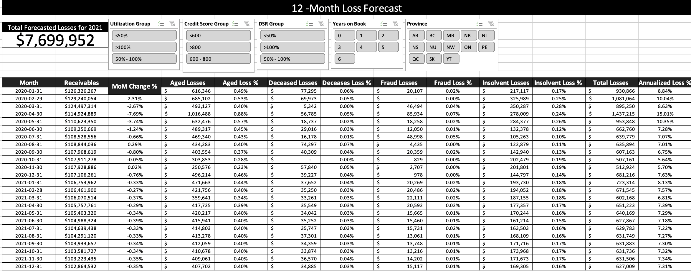
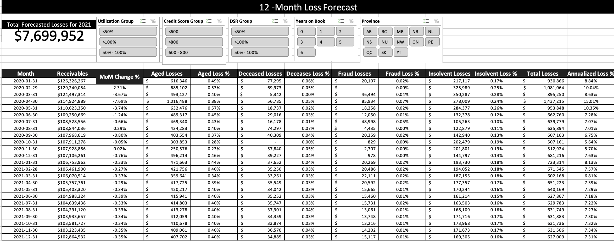

FinTech
Roll Rate and Loss Provisioning Report
 

Vintage Analysis and Forecasting
Summary
As a FinTech company it is imperative to closely monitor and manage the peformance of yout loan portfolio. To achieve this Generating a Roll Rate Report helps indentify trends and potential risks by analyzing the transition of loan between different payment statuses. The Loss Provisioning Report allows for the allocation of funds to cover potential losses enaching risk management and financial planning. Additonally conducting a Vintage Analysis Report aids in understanding the behavior of loans issued during specific periods enabling better informed decision making for future loan originations. These reports collectively provide a comprehensive view of laon performance ensuring proactive risj mitigation and support the overall health and sustainability of your lending activites.
Project Objectives
Approach
Conclusion
Looking at the data from fintech loans using reports like roll rate, loss provisioning and vintage analysis has given a good understanding of the risks involved.The sysytem we created to generate these reports automatically has saved time and reduced mistakes compared to doing it manually.The way we present the loan data through interactive dashboard has made it eaiser for users to make decision about credit.